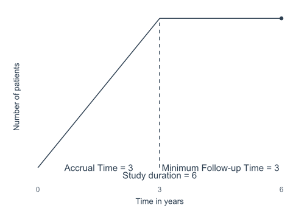
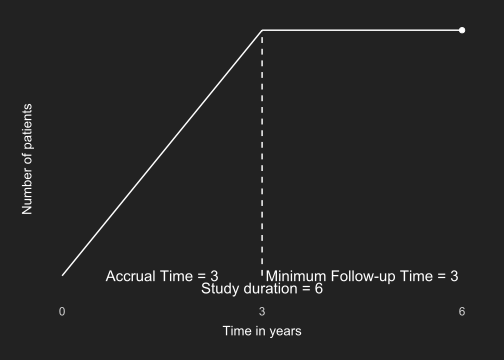
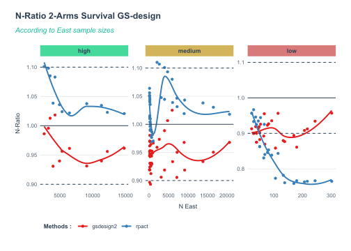
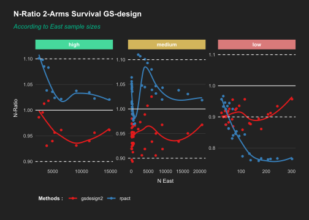

Two-Arm Group-sequential Design with Survival endpoints
Design space explored
Comparisons were conducted for a two‑arm randomized clinical trial with a time‑to‑event primary endpoint, evaluated using a group‑sequential logrank test under proportional hazards. The objective was to compare sample‑size and event‑count outputs across software implementations over a structured grid of design parameters.
Varying design parameters
Four key parameters were varied systematically:
- Type I error rate (\(\alpha\), two‑sided): \(\alpha \in \{0.01,\, 0.05,\, 0.10\}\)
- Power (\(1-\beta\)): \(1-\beta \in \{0.70,\, 0.80,\, 0.90\}\)
- Hazard ratio (HR): \(\text{HR} \in \{0.30,\, 0.60,\, 0.90\}\)
- Control‑group survival probability at 3 years: \(S_c(3\text{y}) \in \{0.20,\, 0.50,\, 0.80\}\)
The 3‑year survival probability was used to calibrate the baseline control‑group hazard rate assuming an exponential distribution, ensuring compatibility across methods requiring an explicit survival model.
The full factorial combination of these parameters yielded 81 distinct design scenarios.
Fixed design assumptions
To isolate the impact of the statistical methodology and software implementation, the following parameters were held constant across all scenarios:
- Number of interim looks: \(k = 4\)
- Information fractions: equally spaced
- Event time window: 3 years
- Accrual period: 3 years (uniform accrual)
- Post‑accrual follow‑up: 3 years
- Allocation ratio (experimental : control): 1 : 1
- Test sidedness: two‑sided
- Censoring: administrative only (no additional loss to follow‑up or competing risks)

Group‑sequential boundaries were generated using Lan–DeMets spending functions:
- Alpha‑spending: O’Brien–Fleming–like
- Beta‑spending: O’Brien–Fleming–like, non‑binding.
Relevancy classification of design scenarios
Relevancy was determined using the same rule‑based system as in the fixed‑design setting, based solely on α and power:
High relevance \[ 0.02 < \alpha < 0.15 \quad\text{and}\quad \text{power} > 0.75. \] These values reflect realistic operating characteristics for confirmatory Group-sequential designs with binary endpoints.
Medium relevance
Scenarios that do not meet criteria for “high” or “low.”
These correspond to plausible but less frequently used configurations.Low relevance
Scenarios satisfying \[ \alpha > 0.20 \quad\text{or}\quad \text{power} < 0.60 \quad\text{or}\quad \text{power} \ge 0.99. \] These extreme settings are uncommon in practice but retained to evaluate numerical stability of boundary and spending‑function implementations.
This classification serves only to contextualize results, it does not affect computations.
Scope of the comparison
For each of the 81 scenarios, all methods and software implementations were used to compute:
- The required number of events to achieve the target power under the specified hazard ratio, and
- The corresponding total sample size, accounting for accrual and follow-up.
The design space was intentionally chosen to span both conventional trial settings and extreme configurations, allowing a comprehensive assessment of agreement, divergence, and stability across methods.
Methods compared
- East: Log Rank Test Given Accrual Duration and Study Duration [SU-2S-LRSD]
rpact::getSampleSizeSurvival()gsDesign2::gs_design_ahr()
Results
📌Overall: within realistic design regions, both gsdesign2 and rpact reproduce East’s GS survival sample sizes reasonably well, with wider divergence appearing only in non‑practical parameter regions.
- In high‑relevancy designs, both
gsdesign2andrpactremain close to East, with N‑ratios typically between ~0.95 and 1.05. Small systematic shifts appear, but overall alignment is good for standard survival group-sequential setups. - For medium‑relevancy scenarios, the dispersion increases and the curves reveal some parameter‑dependent patterns. Deviations remain moderate, but neither method stays perfectly centered around 1.00 across the full range.
- In low‑relevancy cases, discrepancies become more pronounced. Both methods deviate from the 1.00 baseline in opposite directions depending on the region, reflecting unstable behaviour in designs that are not operationally realistic.
- These differences are expected: Group-sequential Survival formulas are more sensitive to event‑timing assumptions, and the “low‑relevancy” scenarios include parameter combinations that would not be used in practice.
nQueryis not included because the version used does not provide group‑sequential designs for Survival endpoints.
| N-Ratio 2-Arms Survival GS-design | ||||||
| According to East sample sizes | ||||||
| Relevancy | Min | Q1 | Mean | Median | Q3 | Max |
|---|---|---|---|---|---|---|
| high | ||||||
| gsdesign2 | 0.93 | 0.94 | 0.97 | 0.96 | 0.99 | 1.02 |
| rpact | 1.02 | 1.02 | 1.05 | 1.04 | 1.08 | 1.10 |
| medium | ||||||
| gsdesign2 | 0.89 | 0.93 | 0.95 | 0.95 | 0.97 | 1.02 |
| rpact | 0.97 | 0.99 | 1.03 | 1.03 | 1.05 | 1.11 |
| low | ||||||
| gsdesign2 | 0.86 | 0.89 | 0.91 | 0.91 | 0.92 | 0.96 |
| rpact | 0.76 | 0.77 | 0.85 | 0.85 | 0.93 | 0.97 |
| Red : < 50% of N-ratios ±10% | ||||||

| N-Ratio 2-Arms Survival GS-design | ||||||
| According to East sample sizes | ||||||
| Relevancy | Min | Q1 | Mean | Median | Q3 | Max |
|---|---|---|---|---|---|---|
| high | ||||||
| gsdesign2 | 0.93 | 0.94 | 0.97 | 0.96 | 0.99 | 1.02 |
| rpact | 1.02 | 1.02 | 1.05 | 1.04 | 1.08 | 1.10 |
| medium | ||||||
| gsdesign2 | 0.89 | 0.93 | 0.95 | 0.95 | 0.97 | 1.02 |
| rpact | 0.97 | 0.99 | 1.03 | 1.03 | 1.05 | 1.11 |
| low | ||||||
| gsdesign2 | 0.86 | 0.89 | 0.91 | 0.91 | 0.92 | 0.96 |
| rpact | 0.76 | 0.77 | 0.85 | 0.85 | 0.93 | 0.97 |
| Red : < 50% of N-ratios ±10% | ||||||

Interactive results
You can explore all results interactively, filter designs, compare methods, and inspect individual cases in the interactive section of the website.